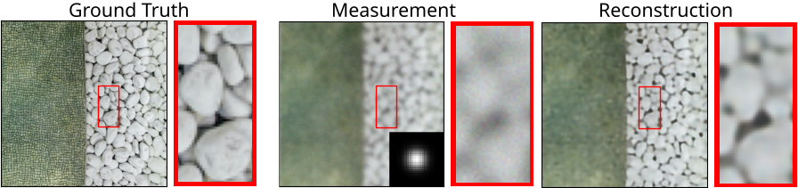

Jérémy Scanvic


Hi there. 👋 I am a postgraduate research student at the University of Edinburgh, working on self-supervised learning for imaging inverse problems including image super-resolution and deblurring, and most specifically focused on combining equivariant imaging and scale-invariance. Feel free to contact me if you have any question.
Publications

Self-Supervised Learning for Image Super-Resolution and Deblurring
Jérémy Scanvic, Mike Davies, Patrice Abry, Julián Tachella
arXiv 2023
Jérémy Scanvic, Mike Davies, Patrice Abry, Julián Tachella
arXiv 2023
Libraries

Deep Inverse
- an open-source PyTorch library for solving imaging inverse problems using deep learning
- written by Julián Tachella, Dongdong Chen, Samuel Hurault and Matthieu Terris